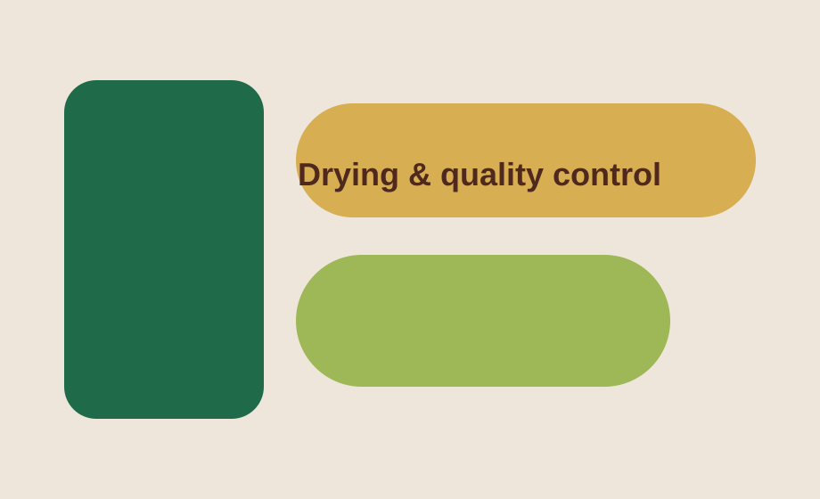
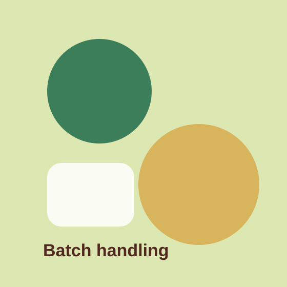
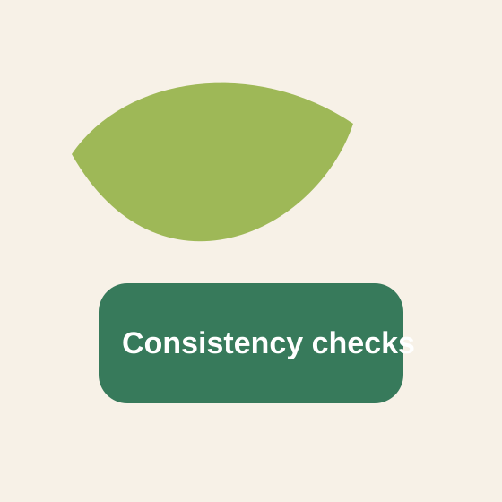
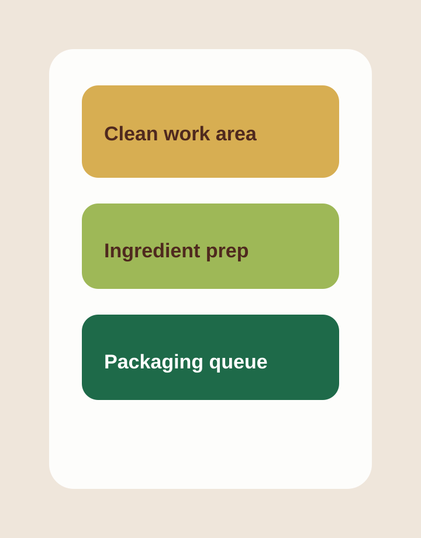
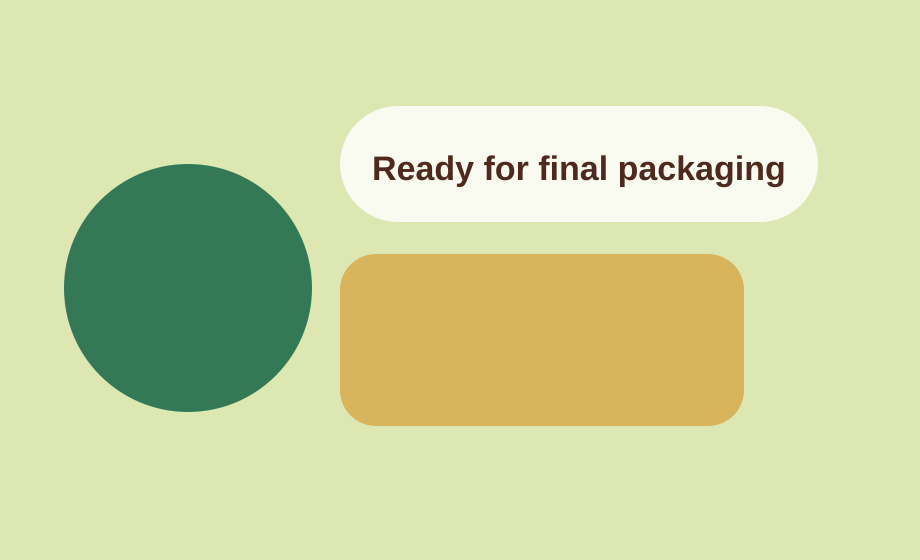

Mission
Present natural Sri Lankan ingredients in formats that feel modern, credible, and easy to understand.
Loading
About Us
This page gives you a dedicated space for the company story, founder message, and the core operating principles behind the flour range.
Our Story
Gaici is positioned as a structured brand built from Sri Lankan agricultural value, not a generic ingredients page. The goal is to present a clear range, strong sourcing story, and a clean commercial identity that can grow with real packaging, real certifications, and final export information.
This version uses placeholders where your final company photos, founder story, certifications, and operational details will be added later.
Present natural Sri Lankan ingredients in formats that feel modern, credible, and easy to understand.
Keep the product range focused, the visual system consistent, and the brand message easy to scale.
Create a commercial site foundation that can later support real product detail, inquiry flow, and trust signals.
Our Promise
The brand promise is not complicated: clear ingredients, clean product presentation, and a website structure that separates the company story from the commercial product details.
That separation matters. It makes the site easier for buyers to understand and easier for you to maintain as the business grows.
Craft & Process





Founder Note
Use this block for the final founder message, company background, and long-form brand trust story. It already has a separate page context now, so the message does not need to compete with home page product selling.
Replace the text with the real founder statement and replace the portrait image later in
assets/images/team/.
Chamila Wickramathilake
Founder, Gaici